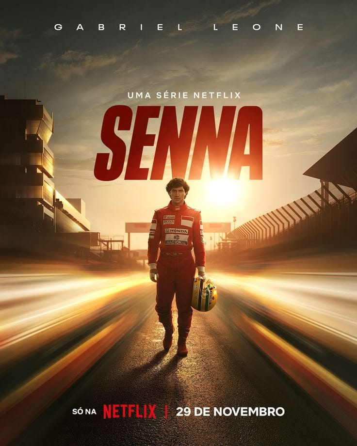

O Dilema das Redes
Documentário que aborda os impactos das redes sociais na sociedade, incluindo questões relacionadas à privacidade, manipulação e saúde mental.
Gênero: Documentário | Ano: 2020 | Duração: 1h34min | Classificação indicativa: 12 anos
Mergulhe em relatos surpreendentes, acontecimentos históricos, histórias de pessoas e temas que despertam a curiosidade. Nesta categoria, você encontra documentários que vão muito além do entretenimento, trazendo fatos, diferentes perspectivas e histórias capazes de informar, emocionar e fazer você refletir. Escolha um título e descubra algo novo a cada episódio.
Documentário que aborda os impactos das redes sociais na sociedade, incluindo questões relacionadas à privacidade, manipulação e saúde mental.
Gênero: Documentário | Ano: 2020 | Duração: 1h34min | Classificação indicativa: 12 anos

Documentário sobre a vida e a carreira do piloto brasileiro Ayrton Senna, mostrando sua trajetória dentro e fora das pistas.
Gênero: Documentário | Ano: 2010 | Duração: 1h45min | Classificação indicativa: Livre
Série documental que apresenta o caso de Elize Matsunaga, abordando o crime, a investigação e os acontecimentos que levaram ao julgamento.
Gênero: Documentário | Ano: 2021 | Duração: 4 episódios | Classificação indicativa: 16 anos